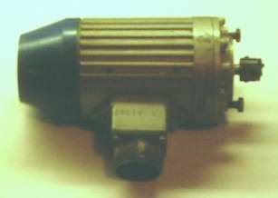
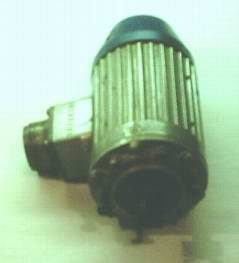
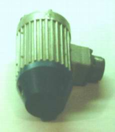
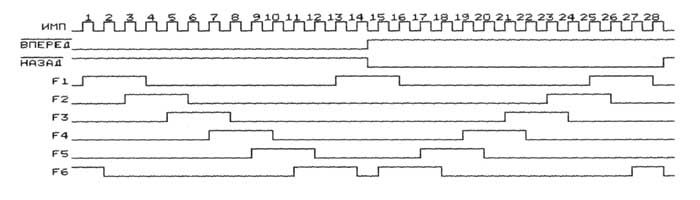
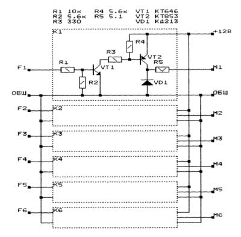
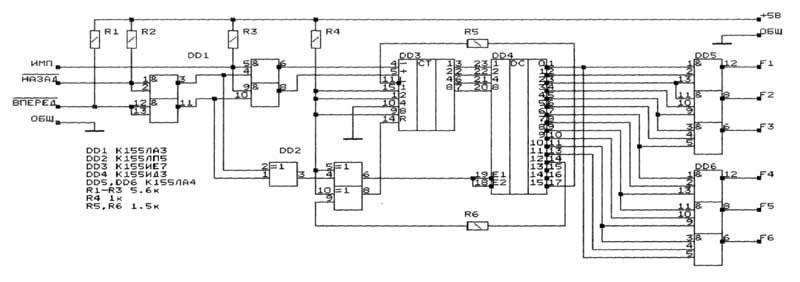
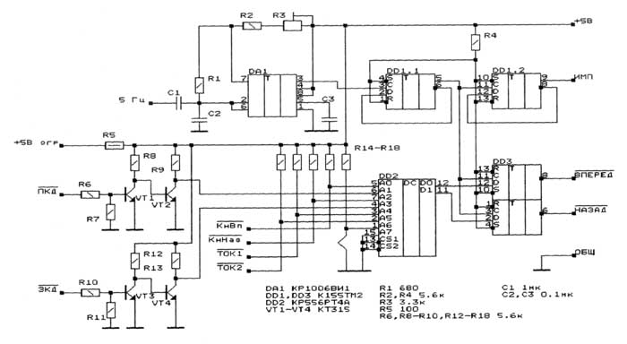
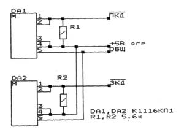
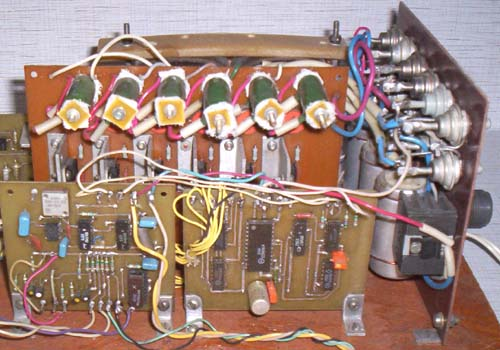
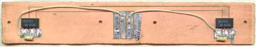

Электронная система управления шаговым двигателем ШД-5Д1МУ3



Рис. 1. Шаговый двигатель ШД-5Д1МУ3.
Шаговый двигатель ШД-5Д1МУ3 (ДШР-80) предназначен для преобразования электрических импульсов в дискретные угловые перемещения и обладает высокими эксплуатационными характеристиками, в частности, малым углом шага. Внешний вид шагового двигателя ШД-5Д1МУ3 в разных ракурсах показан на рис. 1. Технические характеристики представлены в таблице 1.
Таблица 1.
| Номинальное напряжение питания, В | 48 |
| Напряжение питания постоянного тока при резистивной форсировке, В | 48 (+4.8/-7.2) |
| Ток в цепи фазовой обмотки в режиме фиксированной стоянки при напряжении питания 48 В при трёх включенных фазах, А | 3 (±0.1) |
| Единичный шаг, градус | 1.5 |
| Статическая погрешность отработки шага, минут | ± 27 |
| Номинальный вращающий момент нагрузки, Н ∙ м | 0.100 |
| Номинальный момент инерции нагрузки, кг ∙ м2 | 4 ∙ 10-6 |
| Максимальная приемистость при номинальном напряжении питания, шаг/с, не менее | 2800 |
| Максимальный статический момент при питании двух фазовых обмоток током 3 (±0.1) А каждой фазы, Н ∙ м, не менее | 0.400 |
| Максимальная частота отработки шагов в номинальном режиме, шаг/с | |
| - при резистивной форсировке: | 8000 |
| - при импульсной форсировке: | 16000 |
| Число фаз | 6 |
| Вращающий момент, Н ∙ м, при моменте инерции нагрузки 2 ∙ 10-6 кгм2 при частоте управляющих импульсов | |
| - 400 | 0.35 |
| - 800 | 0.4 |
| - 1000 | 0.45 |
| - 1500 | 0.48 |
| - 2000 | 0.50 |
| - 4000 | 0.29 |
| - 6000 | 0.20 |
| - 8000 ... 16000 | 0.10 |
| Максимальная частота, шаг/с | |
| - при резисторной форсировке | 8000 |
| - при электронной форсировке | 16000 |
| Режим работы | Продолжительный |
| Номинальный режим работы | S1 |
| Степень защиты | JP44 |
| Форма исполнения | JM4091 |
| Класс изоляции | F |
| Масса, кг | 2.2 |
| Условия эксплуатации | |
| Температура окружающей среды, 0C | -45 ... +40 |
| Относительная влажность воздуха при температуре +15 0C, %, не более | 80 |
Шаговый двигатель (ШД) типа ШД-5Д1МУ3 был применен в системе линейной однокоординатной подачи. Основным требованием при разработке системы управления (СУ) двигателем являлась низкая стоимость разработки и изготовления, доступность и дешевизна элементной базы, вследствие чего СУ было решено построить на дискретных элементах (в частности, на микросхемах серии К155). Двигатель имеет 12-контактный штыревой разъем, на который выходят выводы шести обмоток. Последовательность и фазировка обмоток приведена в таблице 2.
Таблица 2.
| Обмотка | Начало | Номер контакта | Конец | Номер контакта |
| первая | М1 | 1 | О1 | 4 |
| вторая | М2 | 7 | О2 | 10 |
| третья | М3 | 2 | О3 | 5 |
| четвертая | М4 | 8 | О4 | 11 |
| пятая | М5 | 3 | О5 | 6 |
| шестая | М6 | 9 | О6 | 12 |
Ротор ШД-5Д1МУ3 не имеет постоянных магнитов, поэтому был выбран следующий алгоритм работы двигателя. Концы всех обмоток (О1 - О6) соединяются между собой и подключаются к общему проводу. На начала обмоток (М1 - М6) подается шестифазная последовательность импульсов (F1 - F6) в режиме полушага, т. е., например, сигнал на вторую обмотку поступает, когда с предыдущей обмотки (первой) сигнал еще не снят. Затем с первой обмотки сигнал снимается, и управление полностью переходит ко второй обмотке и т. д. Последовательность подачи импульсов на обмотки (сигналы F1 - F6 соответствуют началам обмоток М1 - М6) в режиме полушага при разных направлениях вращения представлена на рис. 2. Сигналы соответствуют обозначениям на принципиальных схемах (рис. 3 - 6).

Рис. 2. Последовательность управляющих импульсов.
СУ состоит из четырех узлов: выходные ключи, формирователь управляющих импульсов, генератор импульсов и логический блок, концевые датчики. Принципиальные электрические схемы узлов представлены на рис. 3 - 6. Соединения узлов производятся в соответствии с входными и выходными сигналами (контакты с одинаковыми обозначениями соединяются между собой).
На рис. 3 представлена принципиальная схема выходного узла (выходные ключи).

Рис. 3. Схема принципиальная выходных ключей СУ ШД.
На входы шести идентичных каналов подается шестифазная последовательность управляющих импульсов (F1 - F6, ТТЛ-уровень, положительная логика) с формирователя управляющих импульсов. Сигнал каждого канала усиливается транзисторами VT1, VT2 и через резистор R5 сопротивлением 5.1 Ом подается на начало соответствующей обмотки (М1 - М6). Резистор R5 служит, во-первых, для ограничения выходного тока (защита обмотки от перегрева) и, во-вторых, совместно с диодом VD1 обеспечивает демпфирование ротора ШД. Выбор пониженного напряжения питания (12 вольт) обусловлен требованием защиты двигателя от перегрева.
На рис. 4 представлена принципиальная схема формирователя управляющих импульсов.

Рис. 4. Схема принципиальная формирователя управляющих импульсов СУ ШД.
Для получения шестифазной последовательности импульсов использован реверсивный шестнадцатиричный счетчик DD3 с дешифратором DD4 и выходными элементами DD5, DD6, логика работы которых обеспечивает требуемые характеристики последовательности. Когда счетчик работает в режиме прямого счета (вращение ШД соответствует подаче вперед), его сброс (установка в 0) производится при достижении значения счетчика и дешифратора, равного 12, после чего процесс формирования шестифазной последовательности начинается заново. Когда счетчик работает в режиме обратного счета (вращение ШД в обратном направлении), то при достижении значении счетчика и дешифратора, равного 14, производится его установка в 11, после чего процесс формирования шестифазной последовательности начинается заново. Элементы микросхемы DD1 обеспечивают прохождение счетных импульсов ИМП на соответствующие входы счетчика в зависимости от состояния сигналов -НАЗАД и -ВПЕРЕД. Элементы микросхемы DD2 блокируют дешифратор при совпадении уровней сигналов -НАЗАД и -ВПЕРЕД. Выходные сигналы F1 - F6 при этом равны нулю, и напряжение на обмотки ШД не подается.
На рис. 5 представлена принципиальная схема генератора импульсов и логического блока.

Рис. 5. Схема принципиальная генератора импульсов и логического блока СУ ШД.
На таймере DA1 собран генератор импульсов частотой 2 кГц. Частота генератора может изменяться с помощью резистора R3. При подключении дополнительного конденсатора C1 (путем замыкания выводов 5 Гц и ОБЩ) частота генератора может быть уменьшена в 10 и более раз (в зависимости от емкости C1). Уменьшение частоты может потребоваться при отладке механических узлов устройств, для которых используется СУ. С выхода DA1 импульсы частотой 2 кГц поступают на делитель частоты, собранный на триггере DD1.1. Импульсы частотой 1 кГц и скважностью 2 используются для синхронизации установки сигналов -ВПЕРЕД и -НАЗАД с помощью триггера DD3. Счетные импульсы ИМП частотой 500 Гц формируются с помощью делителя DD1.2. Для внешнего управления используются сигналы концевых датчиков -ПКД (передний концевой датчик) и -ЗКД (задний концевой датчик), сигнал с переключателя "вперед - стоп - назад" (-КнВп и -КнНаз), а также сигналы с датчиков тока -ТОК1 и -ТОК2. Необходимые логические преобразования осуществляются с помощью микросхемы DD2 ПЗУ КР556РТ4А [3]. Питание концевых датчиков производится через низкоомный токоограничительный резистор R5 (для защиты блока питания +5 В от случайного замыкания). Входные каскады на транзисторах VT1VT2 и VT3VT4 служат для согласования концевых датчиков с микросхемой ПЗУ (защита от помех, защита от обрыва линии). Программирование микросхемы ПЗУ произведено с помощью аппаратного программатора [1] в соответствии с таблицей 3 (в зависимости от требуемой логики работы содержание ПЗУ может быть изменено).
Таблица 3.
| A7 | A6 | A5 | A4 | A3 | A2 | A1 | A0 | D1 | D0 |
| 0 | 0 | 1 | 1 | 0 | 1 | 1 | 0 | 0 | 1 |
| 0 | 0 | 1 | 1 | 1 | 1 | 1 | 0 | 0 | 1 |
| 0 | 0 | 1 | 1 | 1 | 0 | 0 | 1 | 1 | 0 |
| 0 | 0 | 1 | 1 | 1 | 0 | 1 | 1 | 1 | 0 |
| 0 | 0 | 0 | 0 | 1 | 1 | 1 | 0 | 1 | 0 |
| 0 | 0 | 0 | 0 | 1 | 0 | 1 | 1 | 0 | 1 |
Значения выходных сигналов D0 - D3 по всем остальным адресам микросхемы ПЗУ равны нулю (программирование по этим адресам не производилось).
На рис. 6 представлена принципиальная схема узла концевых датчиков.

Рис. 6. Схема принципиальная концевых датчиков.
Концевые датчики построены на основе магнитоуправляемых микросхем (МУМС) К1116КП1 с открытым коллекторным выходом. Расстояние между центрами МУМС на плате около 140 мм (максимальная подача). Плата концевых датчиков крепится к неподвижной станине. На движущейся подаче устанавливается штанга с постоянным магнитом (неодим-железо-бор, диск Д10 х 3, намагничен аксиально в установке намагничивания [5]). Когда магнит достигает зоны чувствительности МУМС, соответствующий сигнал (-ПКД или -ЗКД) принимает значение, равное логическому нулю, и ШД останавливается.
На рис. 7 показаны платы узлов СУ ШД в сборе, подключенные к блоку питания, а на рис. 8 - плата концевых датчиков.

Рис. 7. СУ ШД с блоком питания.

Рис. 8. Плата концевых датчиков.
Ссылки:
05.03.2004
15.11.2005
22.02.2006
13.07.2006
16.06.2010
Альтернативные источники
энергии
Компьютеры и
Интернет
Магнитные поля
Механотронные системы
Перспективные
разработки
Электроника и
технология